Introduction
Ce rapport accompagne le relevé d'audit effectué sur le site « servior.lu ».
La méthodologie d'audit employée repose sur le référentiel RGAA 4.1, consultable à l'adresse suivante : https://accessibilite.public.lu/fr/rgaa4.1/criteres.html
L'audit a été réalisé au moyen de l'utilisation de navigateurs web et d'outils spécialisés. Des tests de restitution ont également été effectués conformément à la base de référence définie par le RGAA 4.1.
Échantillon
L'audit a porté sur un échantillon de 17 pages pour le niveau double A (AA) :
| Nº page | Titre de la page | URL |
|---|---|---|
| P01 | Accueil | https://www.servior.lu/ |
| P02 | Contact | https://www.servior.lu/contact/ |
| P03 | Le groupe | https://www.servior.lu/servior-leader-au-luxembourg/le-groupe/ |
| P04 | Historique | https://www.servior.lu/servior-leader-au-luxembourg/historique/ |
| P05 | Tout sur Servior | https://www.servior.lu/servior-leader-au-luxembourg/ |
| P06 | Publications | https://www.servior.lu/centre-des-medias/publications-officielles/ |
| P07 | Demande d'admission | https://www.servior.lu/form/ |
| P08 | Nos centres | https://www.servior.lu/nos-centres/ |
| P09 | Bascharage | https://www.servior.lu/Centres/bascharage/ |
| P10 | Home Sweat Home | https://www.servior.lu/ma-vie-chez-servior/home-sweet-home/ |
| P11 | Vivre chez Servior | https://www.servior.lu/ma-vie-chez-servior/ |
| P12 | Repas sur roues | https://www.servior.lu/repas-sur-roues/ |
| P13 | Recherche "tarifs" | https://www.servior.lu/?s=tarifs |
| P14 | Services | https://www.servior.lu/soutiens-et-services-pour-non-residents/ |
| P15 | FAQ | https://www.servior.lu/faq/ |
| P16 | Actualités | https://www.servior.lu/nouvelles/ |
| P17 | Actualités, Six jours au lac de Constance | https://www.servior.lu/six-jours-au-lac-de-constance-servior-na-pas-de-barrieres/ |
Environnement de test (base de référence)
Quelques critères RGAA, notamment ceux de la thématique JavaScript, incluent des tests de restitution à effectuer sur des technologies d'assistance associées à des navigateurs et des systèmes d'exploitation. Pour qu'un dispositif HTML / WAI-ARIA ou son alternative soit considéré comme compatible avec l'accessibilité, il faut qu'il soit pleinement fonctionnel, en termes de restitution et de fonctionnalités sur certaines combinaisons. Vous trouverez une explication détaillée de cet environnement de tests dans le document du RGAA 4.1.
Nous détaillons ci-dessous la base de référence utilisée pour réaliser les tests de restitution des composants du site.
Environnement de test – ordinateur
| Technologie d'assistance | Navigateur |
|---|---|
| NVDA 2022.2 | Firefox 106 |
| JAWS 2022 | Firefox 106 |
| VoiceOver (macOS Monterey version 12.5) | Safari 15.6 |
Environnement de test — mobile
| Système d'exploitation | Technologie d'assistance | Navigateur |
|---|---|---|
| Android natif 12 | TalkBack (dernière version) | Chrome 104 |
Accessibilité des pages auditées
Le site présente un niveau général d'accessibilité faible.
Le niveau de conformité relevé atteint 34,78 % de conformité sur l'ensemble des pages auditées, avec 28,3 % de conformité au niveau simple A (A) et 56,25 % de conformité au niveau double A (AA).
Le site est non conforme.
Conformité RGAA 4.1 du site
| Conforme | Non conforme | |
|---|---|---|
| A | 28,30% | 71,70% |
| AA (légal) | 34,78% | 65,22% |
Note sur le calcul de conformité
La conformité globale (Tableau « Conformité RGAA 4.1 ») est calculée de la manière suivante : C / (C+NC). C'est le nombre de critères conformes et NC le nombre de critères non conformes.
C'est ce nombre qui constitue la référence légale. Il représente le taux de conformité de l'échantillon.
Il est normal que le taux de conformité global diffère sensiblement du taux de conformité par page. En effet, un critère NC (non conforme) sur une page rend le critère non conforme sur l'ensemble de l'échantillon.
Pour qu'un site soit conforme (100 % des critères applicables sont conformes au niveau AA), il est nécessaire que le taux de conformité par page équivaille à 100 %.
Conformité pour chaque niveau
| Conforme | Non conforme | |
|---|---|---|
| A | 28,30% | 71,70% |
| AA | 56,25% | 43,75% |
Moyenne par pages
| Nº page | Titre de la page | %C |
|---|---|---|
| P01 | Accueil | 47,62% |
| P02 | Contact | 70,73% |
| P03 | Le groupe | 77,5% |
| P04 | Historique | 90,63% |
| P05 | Tout sur Servior | 83,33% |
| P06 | Publications | 93,75% |
| P07 | Demande d'admission | 60,42% |
| P08 | Nos centres | 83,33% |
| P09 | Bascharage | 71,43% |
| P10 | Home Sweet Home | 82,35% |
| P11 | Vivre chez Servior | 85,71% |
| P12 | Repas sur roues | 76,92% |
| P13 | Recherche "tarifs" | 90,63% |
| P14 | Services | 90,91% |
| P15 | FAQ | 81,58% |
| P16 | Actualités | 68,57% |
| P17 | Actualités, Six jours au lac de Constance | 77,78% |
Moyenne par thématiques
| Thématiques | C | NC |
|---|---|---|
| Images | 0% | 100% |
| Cadres | 100% | 0% |
| Couleurs | 0% | 100% |
| Multimédia | 25% | 75% |
| Tableaux | 0% | 0% |
| Liens | 50% | 50% |
| Script | 0% | 100% |
| Éléments obligatoires | 50% | 50% |
| Structuration | 0% | 100% |
| Présentation | 50% | 50% |
| Formulaires | 30% | 70% |
| Navigation | 44% | 56% |
| Consultation | 40% | 60% |
Impacts utilisateurs
Les principales personnes impactées sont les personnes aveugles et celles qui naviguent au clavier. Les problèmes liés aux scripts, à l'API ARIA, aux problèmes de structure, aux pertes d'informations et aux formulaires rendent parfois difficile l'utilisation du site par ces utilisateurs.
Contenus dérogés
La dérogation est un moyen d'exclure du champ d'application du référentiel des contenus particuliers. Les cas de dérogations sont très encadrés, vous en trouverez le détail dans le guide des dérogations.
Les contenus suivants n'entrent pas dans le calcul de la conformité ni dans le périmètre des éléments à rendre accessibles, ils sont dérogés :
- Le module de gestion des cookies;
- Le fil d'actualités Facebook.
Droit à la compensation
Les dérogations émises notamment pour charge disproportionnée demandent en contrepartie la mise en place d'un moyen de compensation pour les utilisateurs. Pour les documents bureautiques par exemple, vous devez fournir un moyen à l'utilisateur de demander une version accessible d'un document s'il en a besoin. Cela peut être un mail ou un formulaire de contact.
Note sur le relevé des non-conformités
Ne sont cités dans ce rapport que quelques exemples issus du relevé des non-conformités.
De plus, toutes les occurrences d'une non-conformité ne sont pas listées dans le relevé. Par exemple : les listes, les balises, les champs de formulaires, le relevé mentionne quelques occurrences, mais ne les cite pas tous.
Avis
Le site présente un niveau d'accessibilité faible, avec notamment de nombreuses erreurs de structure, des composants JS non accessibles, rendant la navigation au clavier et/ou avec les technologies d'assistance compliquée voire impossible. On constate également des problèmes liés aux images, aux couleurs, aux éléments multimédias, à l'utilisation des balises, à la présentation de l'information, aux formulaires et à la navigation entre autres.
Les non-conformités les plus bloquantes pour les utilisateurs concernent :
- Des scripts JS non accessibles à la navigation au clavier ni compatibles avec les technologies d'assistance ;
- Des images porteuses d'information sans texte alternatif ;
- Des informations données par la forme ou la couleur ;
- Des éléments multimédias sans alternative ;
- Des erreurs de structure des pages ;
- Des liens d'évitement non fonctionnels ;
- Des pièges au clavier avec Firefox ;
- Des éléments insérés en CSS non restitués aux technologies d'assistance ;
- Des champs de formulaire sans étiquette, des champs obligatoires et des formats de saisie attendus non signalés ;
- Des documents en téléchargement non accessibles.
Ce sont donc ces points qui devront nécessiter une attention toute particulière et qui demanderont le plus d'efforts.
Annexe technique
Images
Recommandation
Donner à chaque image porteuse d'information une alternative textuelle pertinente et une description détaillée si nécessaire. Lier les légendes à leurs images. Remplacer les images textes par du texte stylé lorsque c'est possible.
Images de décoration
Le site contient des images de décoration qui ne sont pas correctement identifiées, soit parce qu'elles ont une alternative renseignée, soit parce qu'il manque les attributs nécessaires pour qu'elles soient ignorées par les technologies d'assistance.
Ces images n'apportent aucune information et peuvent causer des problèmes de compréhension pour les aveugles et les grands malvoyants qui vont écouter les contenus avec un lecteur d'écran.
- Dans le cas d'une image insérée avec la balise
img, mettre unalt="". - Dans le cas d'une image insérée avec la balise
svg, mettre une propriété ARIAaria-hidden="true".
Constats sur le site
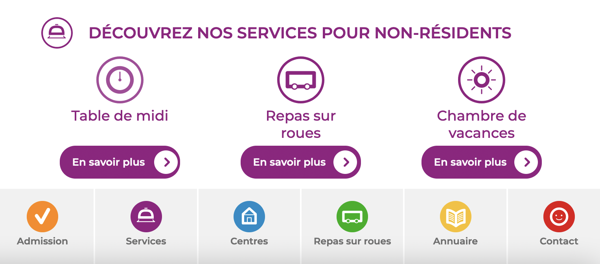Certaines images de décoration ne sont pas correctement identifiées, par exemple :
- Sur toutes les pages, des pictogrammes
<svg>décoratifs; - Des flèches
<svg>décoratives à la suite des liens sur la plupart des pages (exemple : la page "Accueil", "Contact" etc. ).
Images porteuses d'information
Il est nécessaire de donner une alternative pertinente dans le cas où la suppression de l'image entraînerait un problème de compréhension des contenus.
Constats sur le site
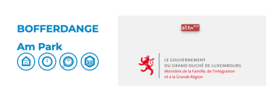Sur plusieurs pages, on retrouve des images ou des pictogrammes porteurs d'information, par exemple :
- Dans la page "Nos centres", les pictogrammes
<svg>représentant les services offerts par les centres ; - Dans la page "Vivre chez Servior", le logo du Gouvernement pour lequel une alternative devrait être renseignée.
Images porteuses d'information complexe
Certaines images porteuses d'informations sont complexes et nécessitent une description détaillée, pertinente, structurée et adjacente à l'image afin de permettre aux personnes ne percevant pas les images (comme les personnes aveugles), ou ayant des difficultés à les comprendre lorsqu'elles contiennent du texte (personnes ayant des difficultés de lecture, comme les dyslexiques par exemple) d'accéder à l'information.
Il sera possible de masquer cette description et de prévoir un bouton permettant à l'utilisateur de l'afficher si besoin (par exemple : « Afficher la description de l'image »). Voir un exemple de ce mécanisme. Il est également possible de proposer un lien adjacent à l'image vers la description détaillée.
Constats sur le site
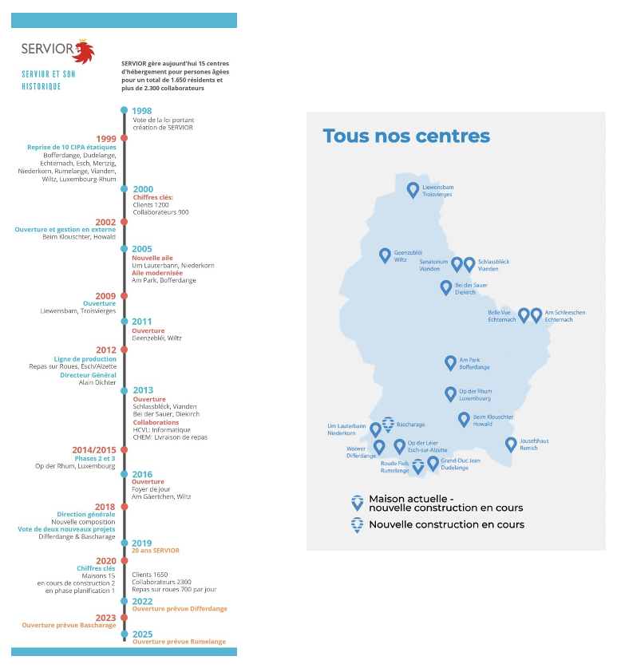Sur plusieurs pages, on retrouve des images porteuses d'information complexe, par exemple :
- Dans la page "Historique", l'image retraçant l'historique de Servior ;
- Dans la page "Nos centres", l'image des centres Servior identifiants les maisons actuelles ou les constructions en cours .
Couleurs
Recommandation
Ne pas donner l'information uniquement par la couleur et utiliser des contrastes de couleurs suffisamment élevés pour les textes et les composants d'interface.
Contrastes des textes
Plusieurs couleurs présentent un rapport de contraste insuffisant, ce qui peut poser problème aux personnes déficientes visuelles qui ont des difficultés à percevoir les couleurs ou les contrastes.
Rapports de contrastes définis par le RGAA
- Pour les textes qui ont une taille de police calculée inférieure à 24px sans effet de graisse ou une taille de police calculée inférieure à 18,5px avec effet de graisse, le rapport de contraste entre la couleur du texte (y compris le texte en image) et son arrière-plan doit être de 4.5:1, au moins.
- Pour les textes qui ont une taille de police calculée supérieure ou égale à 24px sans effet de graisse ou une taille de police calculée supérieure ou égale à 18,5px avec effet de graisse, le rapport de contraste entre la couleur du texte (y compris le texte en image) et son arrière-plan doit être de 3:1, au moins.
Vous pouvez foncer les couleurs pour obtenir le rapport de contraste exigé.
Si la charte graphique ne peut être modifiée, fournissez une méthode aux utilisateurs pour consulter le site avec des contrastes suffisants. Ceci peut être réalisé simplement avec une fonctionnalité JavaScript et une surcharge CSS des couleurs.
Vous pouvez voir un exemple de ce type de mécanisme sur le site sncf.com. Dans les réglages d'accessibilité, vous trouverez une option qui permet d'afficher le site avec des contrastes renforcés et inversés.
Constats sur le site
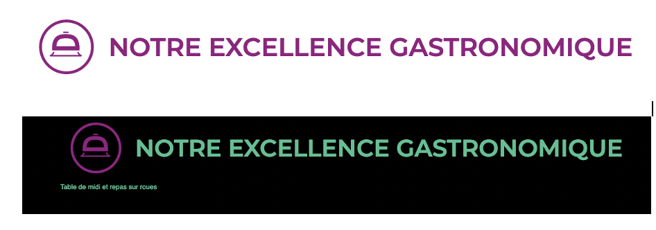Dans la page "Services", on trouve un titre blanc sur fond blanc "Table de midi et repas sur roues", visible uniquement lorsque l'on utilise les outils de renforcement des contrastes.
Contraste des composants d'interface
Les composants d'interface, les illustrations porteuses d'information ou encore les mises en couleurs porteuses d'information doivent être suffisamment contrastés pour être perçus par les utilisateurs ayant des troubles de perception des couleurs. Par exemple, une icône porteuse d'information devra avoir un rapport de contraste avec la couleur de fond de 3. De même, pour un champ de saisie de formulaire, dont la zone active est matérialisée par sa bordure, alors la couleur de cette bordure devra avoir un rapport de contraste de 3 avec la couleur de fond de la page.
Constats sur le site
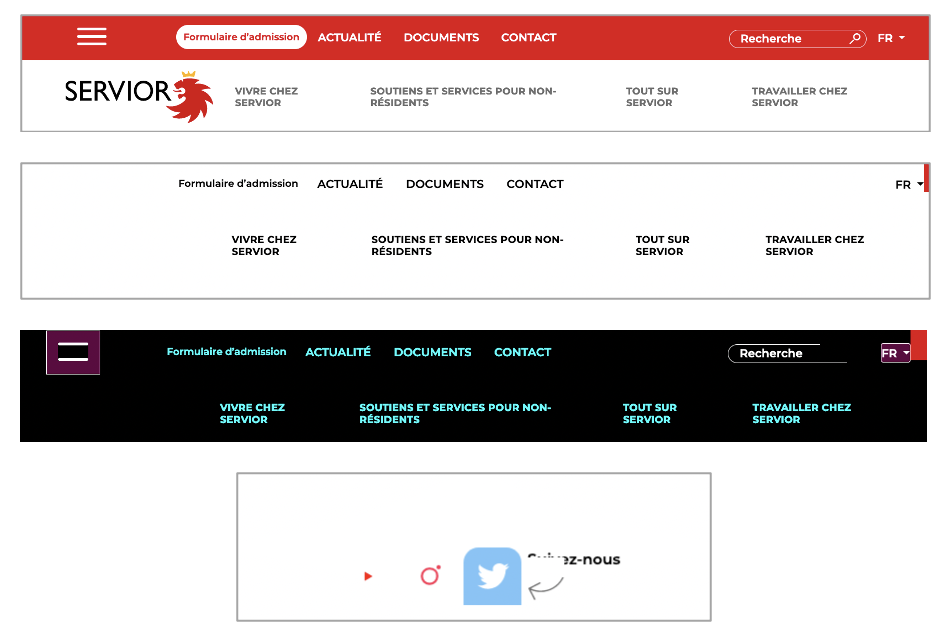Sur certaines pages ou pour certains composants, l'utilisation des outils de renforcement des contrastes rend certains contenus imperceptibles, par exemple en page "Accueil":
- Les éléments du menu ;
- Les icônes des réseaux sociaux du bloc "Suivez-nous".
Information par la couleur
Lorsqu'une information est donnée par la couleur, il faut qu'elle soit également véhiculée par une autre méthode, par exemple par un texte qui donne la même information, pour être perçue par les utilisateurs aveugles.
Il faut également donner un indice visuel autre que la couleur, afin de répondre aux besoins des personnes déficientes visuelles (les daltoniens par exemple). Il peut s'agir d'un symbole, d'une texture, de chiffres.
Constats sur le site

Dans les pages "Tout sur Servior" ou "Demande d'admission", on trouve des informations véhiculées uniquement par la couleur, par exemple :
- Dans la page "Demande d'admission", l'identification des étapes présentant une erreur de saisie ;
- Dans la page "Tout sur Servior", la page active est uniquement signalée par un changement de couleur.
Multimédia
Recommandation
Donner si nécessaire à chaque média temporel une transcription textuelle, des sous-titres synchronisés et une audiodescription synchronisée pertinents. Donner à chaque média non temporel une alternative textuelle pertinente. Rendre possible le contrôle de la consultation de chaque média temporel et non temporel au clavier et s'assurer de leur compatibilité avec les technologies d'assistance.
Identifier les vidéos
Il est nécessaire d'identifier la vidéo et permettre ainsi aux utilisateurs de comprendre quelle est l'information présentée dans ce contenu.
Vous disposez de deux méthodes pour le faire :
- soit faire précéder la vidéo par un titre (solution recommandée) ;
- soit faire suivre la vidéo d'une phrase de légende (paragraphe).
Transcription textuelle
Les vidéos présentes sur le site ne disposent pas de transcription textuelle. Il s'agit d'un impact majeur d'accessibilité. En effet, la transcription textuelle est utile pour différents types d'utilisateurs (aveugles, malvoyants, sourds, malentendants, handicapés moteurs, handicapés cognitifs).
Cette transcription doit être un fichier structuré (docx, HTML) qui reprend toutes les informations présentes (visuelles et sonores) dans la vidéo.
Cette transcription peut être située :
- soit sur la même page que la vidéo ;
- soit ailleurs sur le site. Dans ce cas, ajouter alors un lien vers la transcription sous la vidéo par exemple.
Sous-titres
Chaque vidéo doit disposer de sous-titres synchronisés pertinents, pour permettre aux utilisateurs sourds ou malentendants d'accéder au contenu oralisé de la vidéo.
L'utilisateur doit pouvoir activer ou désactiver les sous-titres depuis le lecteur vidéo. Si ce n'est pas possible, une solution consiste à fournir deux versions de la même vidéo : une version sans sous-titres et une version sous-titrée (On fera ensuite un lien réciproque de l'une vers l'autre).
Audiodescription
Chaque vidéo doit disposer d'une version audiodécrite, si nécessaire. En effet, des textes incrustés ou des actions d'intérêt dans une vidéo ne seront pas perçus par un utilisateur aveugle.
De plus, l'utilisateur doit pouvoir activer ou désactiver l'audiodescription depuis le lecteur vidéo.
Constats sur le site
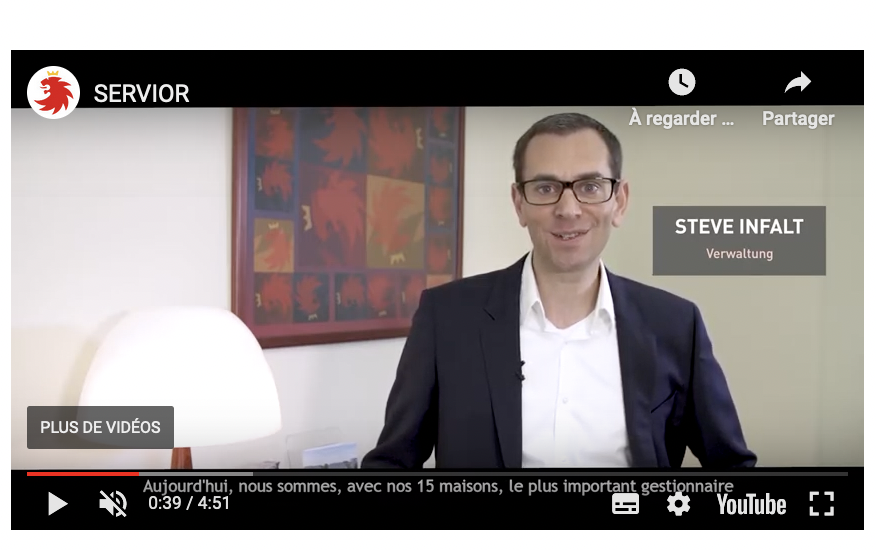On trouve dans la page "Le groupe", une vidéo qui ne possède pas d'audiodescription ou de transcription textuelle, de sous-titres synchronisés (seuls des sous-titres de traduction sont présents) ou de titre l'identifiant clairement.
Alternative
Constats sur le site
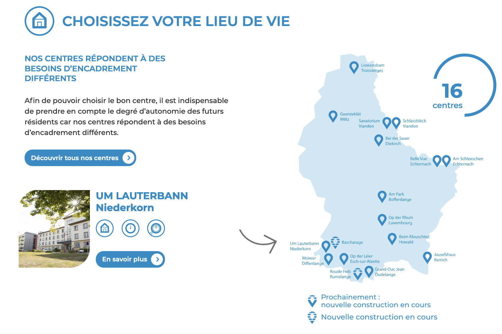On constate en page "Accueil" que la carte interactive des centres permettant d'afficher les informations sur un centre n'a pas d'alternative.
Liens
Recommandation :
Donner des intitulés de lien explicites, grâce à des informations de contexte notamment, utiliser le titre de lien le moins possible. S'assurer que le nom visible est contenu dans le nom accessible.
Présence d'intitulés
Un lien doit toujours posséder un intitulé permettant à l'utilisateur de comprendre sa destination. Les liens contenant uniquement des objets graphiques (images, icônes, etc.) posent souvent problème pour les personnes aveugles.
Pour ces liens, la technique pour fournir un intitulé dépend des cas :
- Si ces liens-images sont construits avec des balises images (
<img />), renseignez l'alternative de l'image (par exemple :<a href="https://twitter.com/example"><img src="path/to/img/png" alt="Suivez-nous sur Twitter" /></a>) - Si ces liens-images sont construits avec des balises SVG (
<svg>), alors ajoutez sur cette balise unrole="img"pour indiquer aux lecteurs d'écran qu'il s'agit bien d'une image et un intitulé pararia-label="Suivez-nous sur Twitter".
Constats sur le site
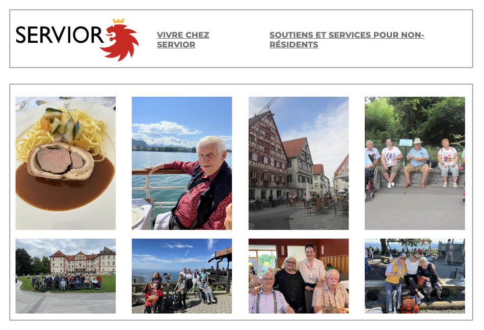En pages "Accueil" ou "Six jours au lac de Constance", on trouve des liens sans intitulé, par exemple :
- Le lien pointant vers la page d'accueil visible en haut de page ;
- Dans la galerie photo de la page "Six jours au lac de Constance", des liens-image avec des alternatives d'images non renseignées.
Scripts
Recommandation :
Donner si nécessaire à chaque script une alternative pertinente. Rendre possible le contrôle de chaque code script au moins par le clavier et la souris et s'assurer de leur compatibilité avec les technologies d'assistance. Identifier les messages de statut lorsque c'est nécessaire.
Utilisation des boutons et des liens
Pour les aveugles et les grands malvoyants qui utilisent un lecteur d'écran, ce manque de distinction claire entre les liens et les boutons peut poser de graves problèmes.
Ainsi, un bouton implémenté sous la forme d'un lien qui déclenche une action de la page, risque de perturber l'utilisateur qui s'attendra au chargement d'une nouvelle page.
De manière générale, les liens devraient être réservés à l'affichage d'une nouvelle page ou la création de liens d'accès rapide dans le contenu. Dans tous les autres cas, l'emploi d'un bouton d'action est plus pertinent.
Enfin, chaque bouton doit avoir un nom accessible défini, soit par l'intermédiaire d'un texte (visible ou positionné hors écran) ou d'une propriété title, aria-label ou aria-labelledby.
Constats sur le site
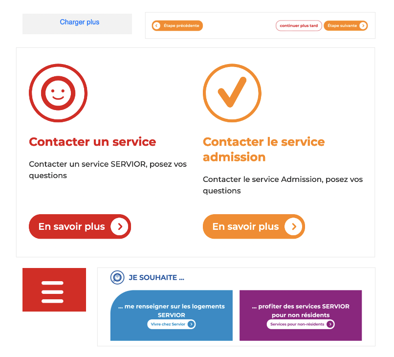Dans certaines pages, on trouve des liens ou balises (<span>) utilisées à la place de boutons. Par exemple :
- En page "Accueil", l'élément "Charger plus" sous le fil Facebook doit être dans un bouton.
- En page "Demande d'admission", les fonctionnalités "Étape précédente" et "Étape suivante" doivent être des boutons.
- En page "Contact", les fonctionnalités "En savoir plus" doivent être des boutons.
On trouve également :
- Un bouton sans nom accessible : le bouton de menu burger visible dans l'en-tête des pages.
- Des boutons utilisés à la place de liens, par exemple : dans la page "Accueil", "Lire l'article", "En savoir plus" dans le bloc "Tout savoir sur l'admission" ou "Découvrez nos services pour non-résidents", "Vivre chez Servior", "Services pour non-résidents", "Travailler chez Servior" dans le bloc "Je souhaite" .
Utilisation inappropriée de propriétés ARIA
Les propriétés ARIA sont chargées de transmettre des informations indispensables à la restitution et l'utilisation des composants développés avec JavaScript aux technologies d'assistance. Une utilisation inappropriée peut poser des problèmes de restitution notamment.
Constats sur le site
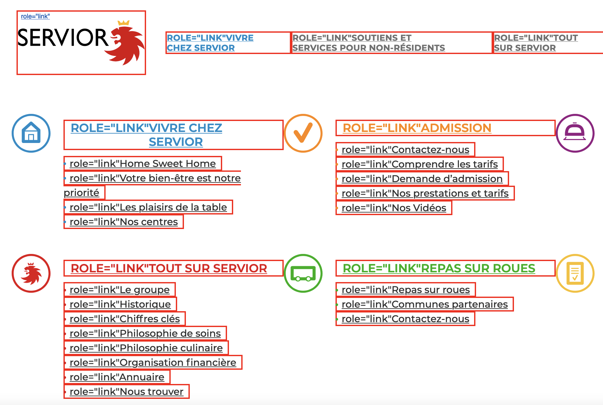Le role ARIA "link" est utilisé de manière inappropriée sur tous les liens du site.
Carrousels
Certaines pages contiennent des carrousels qui n'implémentent pas ou mal le modèle de conception ARIA Carousel.
Constats sur le site
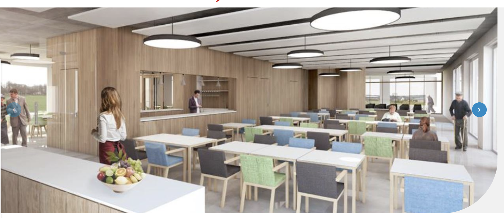Dans les pages "Accueil", "Repas sur roues" ou "Bascharage", on trouve des carrousels qui ne sont pas correctement implémentés.
Système d'onglet (tabs)
Certaines pages contiennent des systèmes d'onglets qui n'implémentent pas ou mal le modèle de conception ARIA Tabs.
Constats sur le site
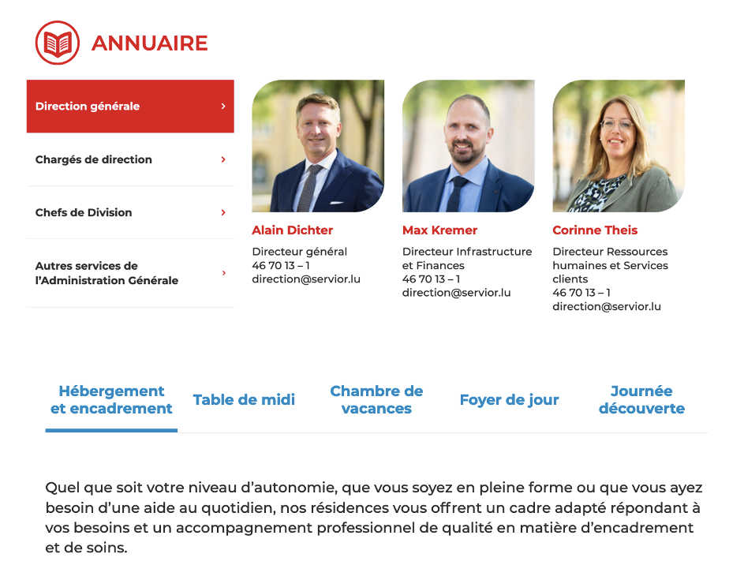Sur les pages "Tout sur Servior" ou "Nos centres", on trouve des systèmes d'onglets qui ne sont pas correctement implémentés. Il n'est pas possible de tabuler entre les éléments.
Système d'ouverture (disclosure)
La page "Accueil" contient un menu burger et un switcher "Outils d'accessibilité" qui n'implémentent pas ou mal le modèle de conception ARIA Disclosure.
Éléments interactifs inaccessibles au clavier
Si un élément ne peut pas recevoir le focus ou n'est pas totalement utilisable au clavier, les utilisateurs pour lequel le clavier est le seul moyen de naviguer seront bloqués.
Constats sur le site
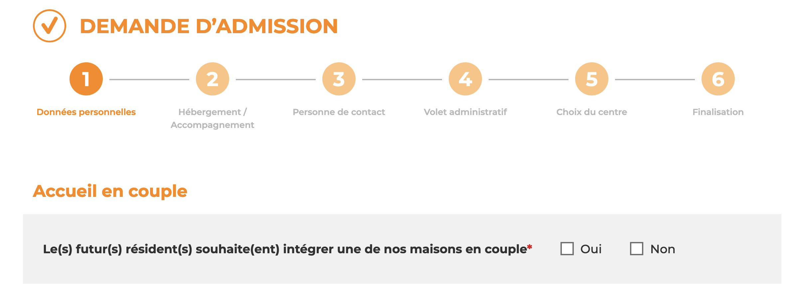Dans le formulaire de la page "Demande d'admission", des éléments sont inaccessibles au clavier en raison de la mauvaise implémentation des composants. Le formulaire présente notamment des cases à cocher qui n'implémentent pas le motif de conception Aria Checkbox et des fonctionnalités non utilisables (passage entre les étapes par exemple) au clavier.
Changements de contexte
Un changement de contexte est une situation où un utilisateur ne peut pas anticiper le comportement d’une fonctionnalité lorsque celle-ci ouvre une nouvelle page, valide un formulaire ou ajoute ou modifie du contenu dans la page par exemple.
Cela concerne plus spécifiquement les fonctionnalités qui se lancent sans que l’utilisateur puisse l’anticiper comme la soumission automatique d’un champ de formulaire sur la sélection d’un item ou lorsque l’utilisateur quitte un champ de saisie.
Constats sur le site
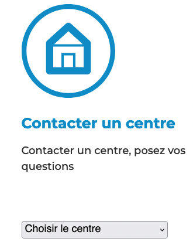La page "Contact" contient un élément qui déclenche des fonctionnalités qui changent le contexte sans que l’utilisateur puisse l’anticiper : lorsque l'on sélectionne une des options dans le formulaire "Contacter un centre", le formulaire est soumis automatiquement.
Éléments obligatoires
Recommandation
Vérifier que chaque page web a un code valide selon le type de document, un titre pertinent et une indication de langue par défaut. Vérifier que les balises ne sont pas utilisées uniquement à des fins de présentation, que les changements de langues et de direction de sens de lecture sont indiqués.
Titre de la page
Le titre de la page (visible dans l'onglet du navigateur) est un élément de repère dans le site web. Pour les utilisateurs de lecteurs d'écran (utilisateurs aveugles ou grands malvoyants), c'est le premier élément restitué par le lecteur d'écran au chargement de la page. Cela permet de donner du contexte aux utilisateurs qui n'ont pas une vision globale de la page. C'est l'information à laquelle les utilisateurs avec des troubles de la mémoire accèdent lorsqu'ils naviguent avec l'historique de navigation du navigateur. Il est donc essentiel d'avoir des titres de pages pertinents, concis et très souvent uniques dans le site, et qui reflètent de la position de l'utilisateur dans le site web.
Il est des cas particuliers, comme les pages dont le contenu est une liste de résultats paginés (ex. : les résultats de recherche), pour lesquels le titre doit refléter la nature de la recherche ainsi que le numéro de page en cours de consultation.
Constats sur le site

Le titre de la page Actualités (page 16) ne reprend pas le numéro de page en cours de consultation.
Indication de langue
Les lecteurs d'écran utilisent les indications de langue pour vocaliser le contenu dans la langue définie. La page doit contenir une définition de langue principale (généralement sur l'élément html).
Ensuite, les éléments de langue étrangère présents dans le contenu doivent être signalés. Si on trouve dans la page des termes absents du dictionnaire de la langue principale de la page, il faut les identifier afin que le lecteur d'écran les restitue dans la langue appropriée. En effet, une mauvaise prononciation pourrait mener à des incompréhensions pour les utilisateurs qui reposent uniquement sur des restitutions orales. Les noms propres sont exclus de cette obligation.
Constats sur le site
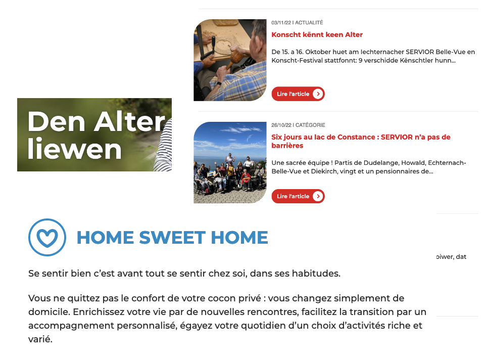Sur plusieurs pages, on trouve des textes pour lesquels le changement de langue n'est pas signalé, par exemple :
- En page "Accueil", la devise "Den Alter liewen" que l'on retrouve également en pages "Tout sur Servior" ou "FAQ";
- Dans la page "Actualités", plusieurs passages de texte. Par exemple : "Konscht kënnt keen Alter";
- Dans la page "Home sweet Home", le texte en anglais "Home sweet Home".
Validité du code
Les technologies d'assistance, comme les lecteurs d'écran ou les systèmes de contrôle à la voix, s'appuient sur le code des pages pour générer les restitutions et les interactions avec l'utilisateur. Un lecteur d'écran va exploiter le code HTML fourni par le navigateur et les informations accessibles au moyen des API d'accessibilité du système.
Si le code comporte des erreurs (balises mal fermées par exemple), il y a un risque que les fonctionnalités du lecteur d'écran soient impactées, comme la navigation de lien en lien par exemple.
Pour vérifier la conformité d'une page, vous pouvez utiliser le validateur mis à disposition par le W3C.
Constats sur le site
On trouve des erreurs de validité du code qui se répercutent sur de nombreuses pages ("Accueil", "Demande d'admission", "Recherche" par exemple) telles une mauvaise imbrication des balises (des boutons dans des liens) ou de nombreuses valeurs d'attributs dupliquées.
Balises utilisées à des fins de présentation
Les éléments de structure HTML ont chacun une sémantique particulière (paragraphe, titre, image, lien, etc.). Si les éléments sont mal employés (détournés de leur utilité première), cela peut poser des problèmes aux utilisateurs qui naviguent à l'aide d'une technologie d'assistance (lecteur d'écran, plug-in…). En effet, les technologies d'assistance disposent de raccourcis permettant de naviguer rapidement entre certains types d'éléments (paragraphes, titres, listes, etc.). Si ces éléments sont mal employés, les utilisateurs ne peuvent pas utiliser ces fonctionnalités de repère et de navigation dans le contenu.
Constats sur le site
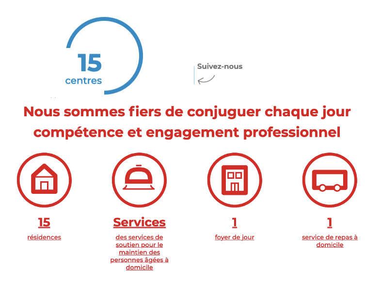Sur plusieurs pages, on trouve des balises utilisées à des fins de présentation, par exemple: en page "Accueil", la mention "15 centres" ou "Suivez-nous" en bas de page.
On note également l'utilisation de balises servant à créer des liens à la place de paragraphes dans les blocs présentant des informations chiffrées sur les centres ou Servior (pages "Le groupe", "Vivre chez Servior", "Repas sur roues").
Structuration de l'information
Recommandation
Utiliser des titres, des listes, des abréviations et des citations pour structurer l'information. S'assurer que la structure du document est cohérente.
Titres
Le titrage des contenus est une étape importante dans la structuration des contenus. Cela répond à deux besoins :
- identifier rapidement un contenu recherché ;
- naviguer rapidement dans le contenu en se déplaçant de titre en titre.
Un titrage correct fournit à l'utilisateur d'un lecteur d'écran un plan du document et lui permet de naviguer de titre en titre pour se déplacer plus rapidement dans le contenu de la page.
Pour valider la structure de votre page, vous pouvez utiliser l'extension Firefox HeadingsMap. Lorsque l'extension est active, sélectionnez l'onglet « Headings » et vérifiez la cohérence et l'imbrication des titres.
Constats sur le site
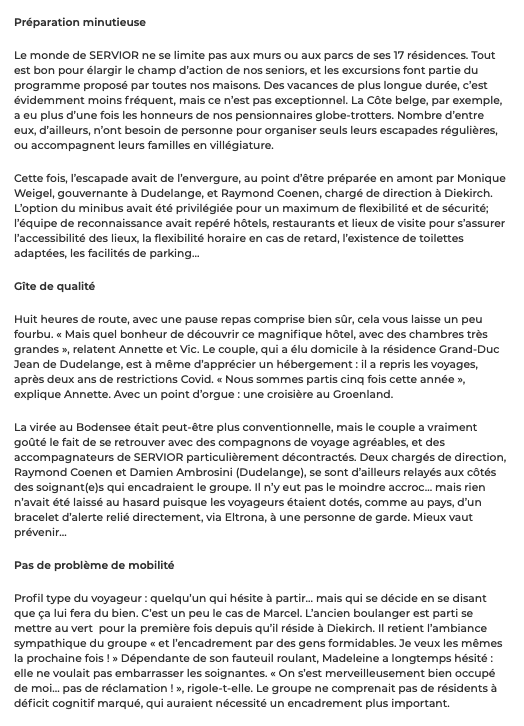Des titres sont manquants sur plusieurs pages (ex : "Accueil", "Contact", "Bascharage", "Home Sweet Home", "Vivre chez Servior", "Actualités" etc.).
Certains textes doivent être des titres, par exemple :
- Dans la page "Accueil", les textes "Sélectionner un centre", "A votre écoute!", "Suivez-nous" etc. ;
- Dans la page "Contact", les textes "Contacter un centre", "Contacter un service" etc. ;
- Dans la page "Actualités, Six jours au lac de Constance", les textes "Préparation minutieuse", "Gîte de qualité", "Pas de problème de mobilité".
Listes
La structuration en listes permet aux utilisateurs de lecteurs d'écran de consulter plus rapidement le contenu, grâce à des raccourcis spécifiques, et d'accéder directement à une liste ou de la passer sans avoir à en parcourir tous les items.
Constats sur le site

Sur plusieurs pages ("Accueil", "Le groupe", "Bascharage", "Vivre chez Servior" etc. ), des suites d'éléments ne sont pas correctement structurées.
On trouve, en page "Accueil" par exemple, plusieurs suites de liens qui constituent des listes, entre autres :
- La suite de liens "Vivre chez Servior", "Soutiens et services pour non-résidents", "Tout sur Servior", "Travailler chez Servior" ;
- La suite "Formulaire d'admission", "Actualité", "Documents", "Contact" ;
- En bas de page, la suite "Covid-19", "Contact", "Bienvenue chez Servior", "Emploi", "FAQ".
Citations
L'absence de signalement des citations peut rendre le contenu plus complexe à comprendre pour les personnes aveugles et les grands malvoyants, et générer des ambiguïtés et des incompréhensions.
Constats sur le site
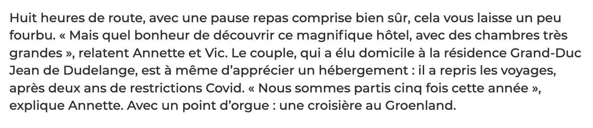Dans les pages "Tout sur Servior" ou "Six jours au lac de Constance", on trouve des citations qui ne sont pas signalées.
Par exemple, dans la page "Six jours au lac de Constance", les reprises de propos de résidents telles :
Mais quel bonheur de découvrir ce magnifique hôtel, avec des chambres très grandes
constituent des citations qui doivent être signalées.
Structure du document
L'utilisation correcte des balises HTML5 et des landmarks ARIA va permettre d'enrichir la restitution pour les utilisateurs aveugles qui ne perçoivent pas les mises en forme : la navigation principale ne sera plus perçue simplement comme une liste de liens, elle sera restituée à l'utilisateur comme un élément de navigation, par l'intermédiaire du lecteur d'écran qui annoncera « région » ou « repère ».
De plus, ces marqueurs sémantiques vont également constituer des éléments de navigation rapide dans la page. Grâce à un raccourci clavier, certains utilisateurs vont pouvoir naviguer plus rapidement entre les régions qui auront été ainsi identifiées.
Constats sur le site
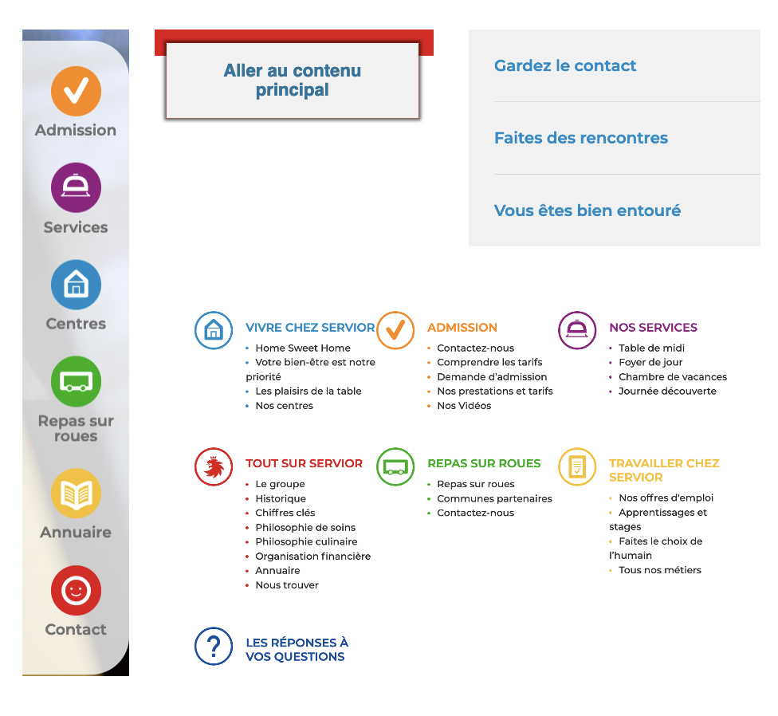Plusieurs marqueurs sémantiques sont manquants ou incorrectement positionnés ce qui se répercute sur l'ensemble des pages.
Des éléments ne sont pas contenus dans une zone de navigation, par exemple :
- Les éléments du menu principal ;
- Le menu latéral gauche ;
- Le lien d'accès rapide "Allez au contenu principal".
Certaines pages présentent également des éléments qui ne sont pas non plus contenus dans une zone de navigation. Par exemple :
- Le sommaire dans la page "Home Sweet Home" ;
- Le sommaire des étapes dans la page "Demande d'admission" ;
- L'élément de pagination dans la page "Actualités".
De plus, les outils d'accessibilité ne sont pas des éléments de navigation et ne doivent pas être contenus dans une zone de navigation.
Présentation de l'information
Recommandation
Utiliser des feuilles de styles pour contrôler la présentation de l'information. Vérifier l'effet de l'agrandissement des tailles des caractères sur la lisibilité. S'assurer que les liens sont correctement identifiables, que la prise de focus est signalée, que l'interlignage est suffisant et donner la possibilité à l'utilisateur de contrôler la justification des textes. S'assurer que les textes cachés sont correctement restitués et que l'information n'est pas donnée uniquement par la forme ou la position d'un élément. S'assurer que les contenus sont lisibles et utilisables dans une fenêtre de largeur réduite. Veiller à ce que l'application de paramètres typographiques n'entraîne pas la perte de contenu ou de fonctionnalité. S'assurer que les contenus qui apparaissent au survol et à la prise de focus puissent être contrôlés par l'utilisateur.
Utilisation de CSS exclusivement
Certains utilisateurs qui présentent des troubles de la lecture (personnes dyslexiques par exemple), vont avoir besoin d'adapter la présentation des pages avec leurs propres mises en forme. Cela est possible sans difficulté si le site web utilise exclusivement les feuilles de styles CSS pour réaliser les mises en forme. Cependant, l'utilisation d'attributs et balises HTML de mise en forme rend ces adaptations plus compliquées, sinon impossibles.
Le RGAA donne la liste des attributs et balises qu'il est interdit d'utiliser.
Constats sur le site
On trouve des attributs de mise en forme sur le menu latéral gauche ou des attributs de redimensionnement sur le carrousel présent en page "Accueil" ou le cadre de la vidéo dans la page "Le groupe".
Contenu visible sans les feuilles de styles
Des contenus informatifs insérés avec CSS (avec des images de fond contenant du texte en image) peuvent ne pas être restitués par les lecteurs d'écran ou les systèmes de loupes vocalisés.
Constats sur le site
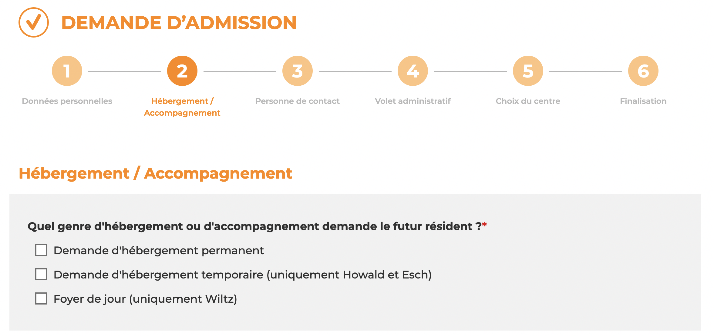La page "Demande d'admission", présente des éléments informatifs qui ne peuvent pas être restitués. Par exemple :
- Les numéros des étapes ;
- L'ensemble des cases à cocher du formulaire.
Contenu compréhensible sans les styles : ordre visible vs ordre réel
Un utilisateur aveugle n'a pas accès à la mise en forme qui parfois est porteuse d'informations importantes, notamment des relations entre les éléments.
Il est important de ne pas implémenter les textes dans l'ordre visuel, mais bien dans l'ordre logique de dépendance et hiérarchie des éléments.
Le contenu doit rester compréhensible sans les feuilles de styles (vous pouvez tester vos contenus en désactivant les feuilles de styles).
Constats sur le site
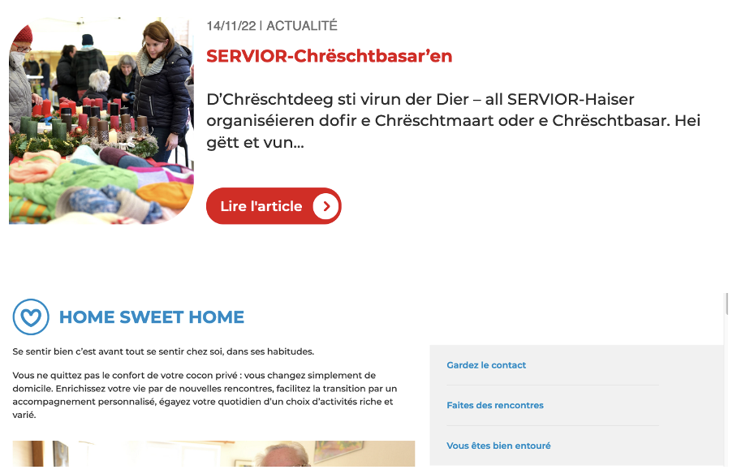Dans les pages "Accueil", "Bascharage", "Home Sweet Home" ou "Actualités", l'ordre de lecture des éléments n'est pas toujours cohérent. Par exemple :
- Dans les pages "Accueil", "Bascharage" ou "Actualités", la date et la catégorie de l'article sont placées avant le titre de l'actualité ;
- Dans la page "Home Sweet Home", le sommaire est placé après le contenu dans le code source.
Liens dont la nature n'est pas évidente
Un lien dont la nature n'est pas évidente est un lien qui peut être confondu avec un texte normal lorsqu'il est signalé uniquement par la couleur par certains utilisateurs ne percevant pas ou mal les couleurs.
Les personnes déficientes visuelles peuvent ignorer ces liens puisque ceux-ci ne sont pas visuellement discernables du reste du texte dans lequel ils sont insérés.
Constats sur le site
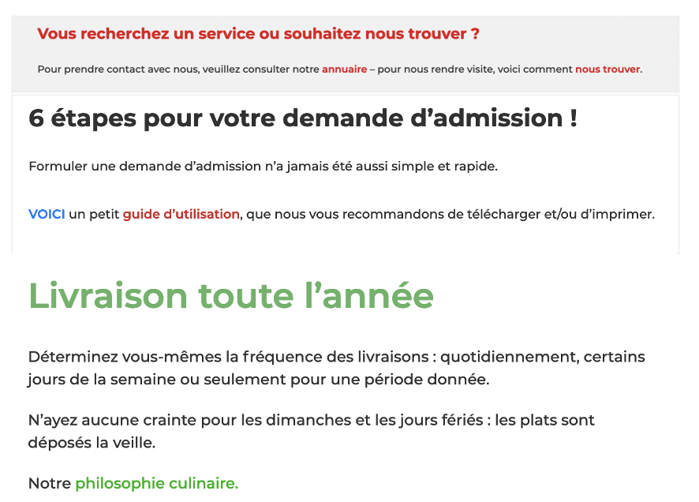Dans les pages "Contact", "Le groupe", "Historique", "Demande d'admission", "Repas sur roues", on trouve des liens dont la nature n'est pas évidente, par exemple :
- Les liens "annuaire" ou nous trouver" en page "Contact" ;
- Le lien "Voici" en page "Demande d'admission" ;
- Le lien "philosophie culinaire" en page "Repas sur roues".
Visibilité de la prise de focus
Les personnes avec un handicap moteur qui naviguent au clavier peuvent rencontrer des difficultés considérables à utiliser du contenu si elles ne sont pas en mesure de repérer l'indication visuelle du focus et ses déplacements.
Constats sur le site
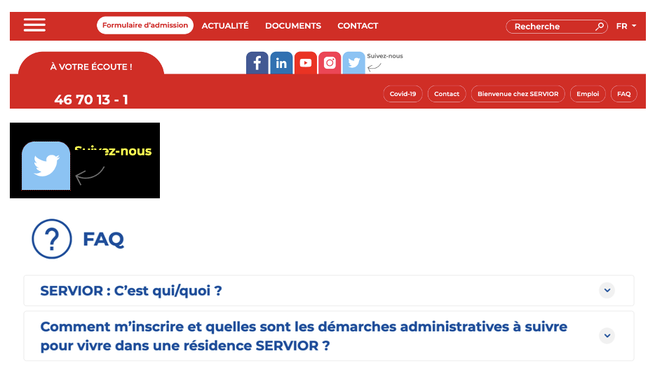La prise de focus n'est pas visible sur tous les éléments, y compris en modifiant le contraste. Par exemple pour :
- Les éléments du menu ou du pied de page sur fond rouge ;
- En pied de page, certains réseaux sociaux (YouTube, Instagram) ;
- Dans la page "FAQ", les boutons de panneaux dépliants.
Information donnée par la forme, la taille ou la position
Les utilisateurs qui ne perçoivent pas la mise en forme (utilisateurs aveugles par exemple) n'auront pas accès aux informations véhiculées par la mise en forme, la taille (taille du texte pour signifier un degré d'importance par exemple), ou la position (une consigne indiquant de cliquer en haut à droite par exemple). Il est nécessaire de fournir un équivalent textuel qui permette d'offrir la même information aux utilisateurs aveugles.
Constats sur le site
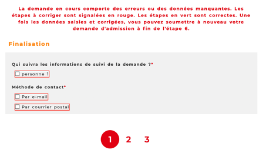Certaines pages présentent des informations par la forme , par exemple :
- Dans la page "Demande d'admission", les erreurs du formulaire sont encadrées en rouge ;
- Dans la page "Actualités", la page active est signalée par la forme.
Formulaires
Recommandation :
Associer pour chaque formulaire chacun de ses champs à son étiquette, grouper les champs dans des blocs d'informations de même nature, regrouper les items de même nature dans les listes de choix, donner à chaque bouton un intitulé explicite. Vérifier la présence d'aide à la saisie, s'assurer que le contrôle de saisie est accessible et que l'utilisateur peut contrôler les données à caractère financier, juridique ou personnel.
Étiquettes et champs
Les champs de formulaires doivent tous posséder des étiquettes correctement reliées.
Une étiquette de champ est un texte situé à proximité du champ de formulaire qui permet de connaître la nature, le type ou le format des informations attendues.
De cette manière, lorsqu'un utilisateur entre dans le champ de saisie avec un lecteur d'écran, le lecteur d'écran lit le contenu de l'étiquette. L'utilisateur comprend alors ce qu'il doit saisir.
Sans cela, même si une étiquette est présente visuellement, l'utilisateur entendra « champ de saisie vide » en entrant dans le champ et ne saura donc pas quoi saisir.
Constats sur le site
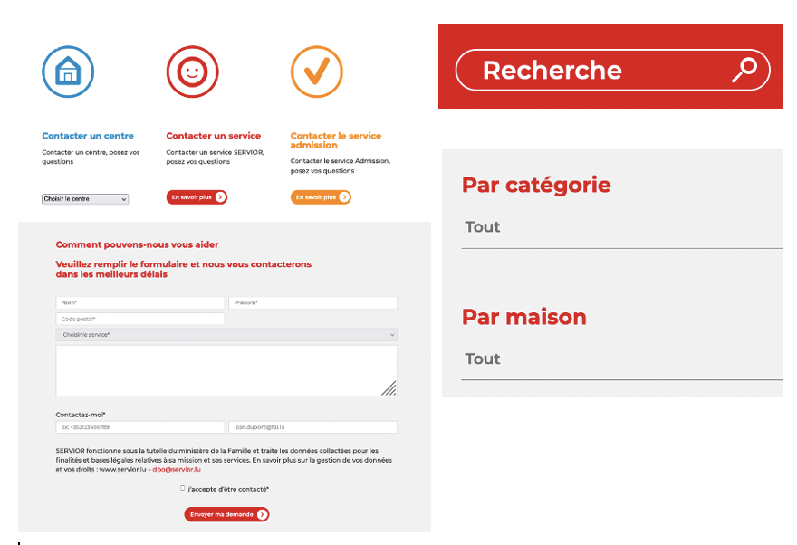Dans plusieurs pages, des champs de formulaire n'ont pas d'étiquette. Par exemple :
- Dans la page "Contact", le champ permettant de choisir le centre à contacter ainsi que tous les champs du formulaire de contact ;
- Dans la page "Bascharage", les champs du formulaire de contact "Nom", "Prénom", "Téléphone", "Mail", "Service" ;
- Dans la page "Demande d'admission", par exemple, le champ "Motif de la demande", des champs dans "Informations de la personne à contacter" ;
- Dans les pages "Actualités" et "Actualités, Six jours au lac de Constance", les options "Par catégorie" et "Par maison" ne sont pas reliées programmatiquement à l’étiquette visible.
De plus, dans la page "Accueil", le champ "Recherche" sans bouton de soumission n'a pas une étiquette pertinente.
Contrôle de saisie et aide à la saisie
Tous les champs obligatoires doivent être identifiés préalablement à toute validation de l’utilisateur.
Pour les champs qui attendent un format de saisie particulier pour être validés, ce format doit être spécifié à l’utilisateur par un passage de texte visible à proximité du champ. De plus, si l’utilisateur commet une erreur sur ce champ, alors le message d’erreur doit présenter un exemple réel de saisie.
Enfin, les messages d'erreur de saisie des champs de formulaire doivent être liés correctement aux champs en erreur.
Constats sur le site
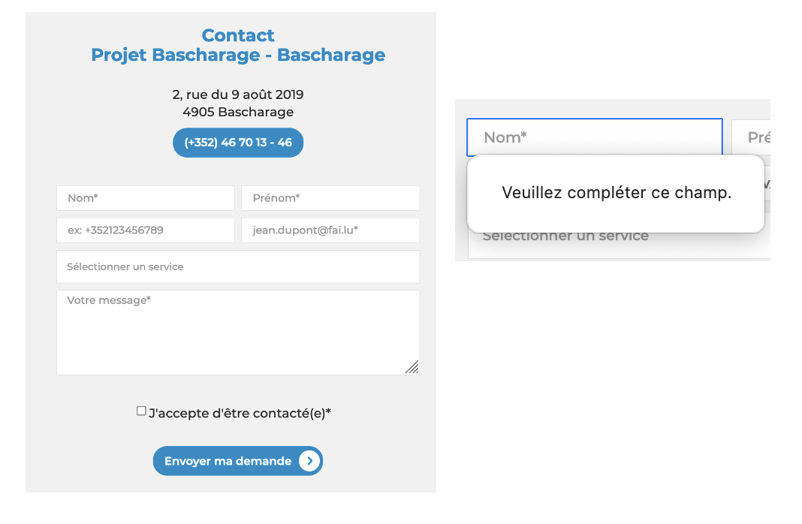Dans les pages "Contact", "Demande d'admission" et "Bascharage", les champs obligatoires et les formats de saisie attendus ne sont pas clairement identifiés. Par exemple :
- les champs obligatoires sont uniquement identifiés avec un astérisque, sans explication de sa signification ;
- Les formats attendus ne sont pas spécifiés dans un passage de texte (courriel, téléphone par exemple) ;
- Les messages d'erreur ne présentent pas d'exemple réel de saisie ;
- Les messages d'erreur ne sont pas reliés aux champs (page "Demande d'admission").
Regroupements de champs et légendes
Les regroupements de champs sont utiles pour ne pas induire certains utilisateurs en erreur, notamment les personnes aveugles.
Les cas typiques de regroupements nécessaires sont les groupes de cases à cocher ou de boutons radio.
Il faut implémenter les champs dans un regroupement lorsque c'est nécessaire et il est obligatoire de définir une légende à ce regroupement.
Constats sur le site
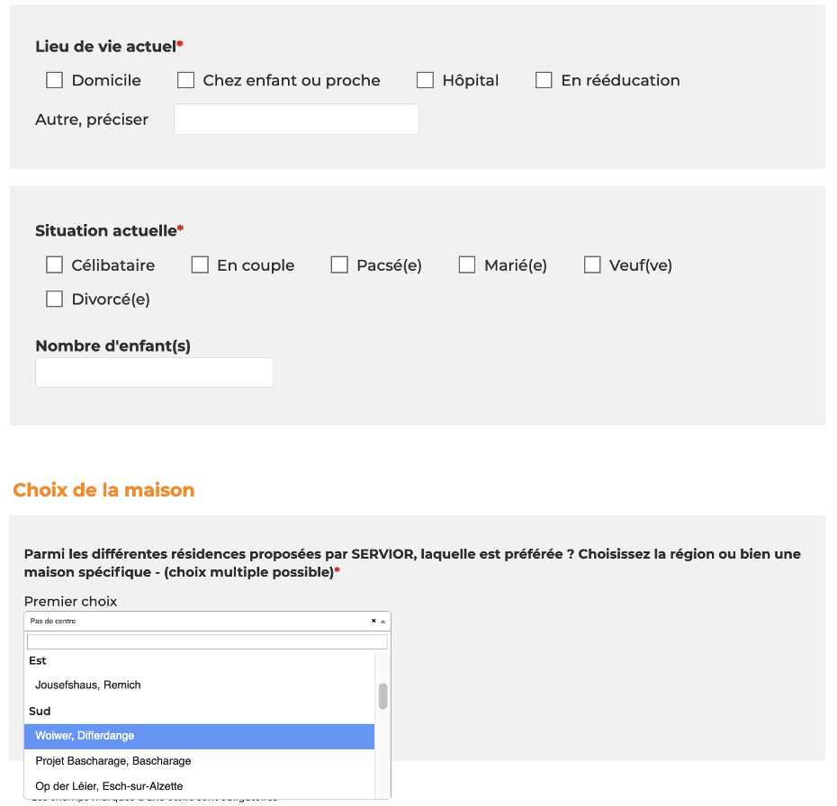Dans la page "Contact", les champs "Contactez-moi" (téléphone et mail) ne sont pas regroupés avec une légende.
Dans la page "Demande d'admission", par exemple :
- Les groupes de cases à cocher ne sont pas regroupés et n'ont pas de légende ;
- Les items de même nature des listes de sélection ne sont pas regroupés dans la liste de sélection "Choix du centre" (Étape 5).
Identification des données attendues
Certains utilisateurs qui ont des troubles d'accès au langage verbal (paralysie cérébrale, aphasie par exemple) auront des difficultés à accéder au sens des termes écrits. Ainsi, pour leur permettre de remplacer les étiquettes présentes dans les formulaires par des étiquettes (verbales ou imagées) qu'ils connaissent, il est nécessaire d'identifier les champs avec un attribut particulier, de sorte qu'une technologie d'assistance pourra réaliser la personnalisation du formulaire nécessaire à l'utilisateur.
L'identification de ces champs permet également aux utilisateurs d'employer des outils pour remplir automatiquement les champs identifiés avec des valeurs de l'utilisateur.
On ne va rechercher que les champs qui attendent une donnée personnelle. Le RGAA demande d'utiliser l'attribut autocomplete et il fournit l'ensemble des valeurs possibles pour l'attribut.
Constats sur le site
Dans les pages "Contact", "Demande d'admission" et "Bascharage", l'identification des données attendues n'est pas présente sur les champs attendant une donnée personnelle, par exemple : nom, prénom, adresse, téléphone, courriel.
Navigation
Recommandation :
Faciliter la navigation dans un ensemble de pages par au moins deux systèmes de navigation différents (menu de navigation, plan du site ou moteur de recherche), un fil d'Ariane et l'indication de la page active dans le menu de navigation. Identifier les groupes de liens importants et la zone de contenu et donner la possibilité de les éviter par des liens de navigation interne. S'assurer que l'ordre de tabulation est cohérent et que la page ne comporte pas de piège au clavier. S'assurer que les raccourcis clavier qui utilisent une seule touche sont contrôlables par l'utilisateur.
Systèmes de navigation
Le RGAA demande qu'un site propose au moins deux systèmes de navigations différents. Prévoir deux systèmes de navigation au moins est important, car :
- tous les utilisateurs ne naviguent pas de la même manière ;
- certains systèmes de navigation peuvent s'avérer trop complexes à utiliser, en particulier pour les personnes qui ont recours à des technologies d'assistance. Par exemple, un menu de navigation trop riche, comme un méga-menu, peut nécessiter beaucoup d'actions pour un utilisateur qui navigue exclusivement au clavier, et donc rendre sa recherche d'information très laborieuse.
Par systèmes de navigation, on entend tout procédé permettant une navigation dans le site ou dans une page, parmi :
- un menu de navigation principal ;
- un plan du site ;
- un moteur de recherche.
Note : un moteur de recherche est considéré comme un moyen de navigation s'il indexe toutes les pages du site (y compris les pages de type " Mentions légales" ou "Politique de confidentialité"), et non pas seulement un choix limité (par exemple, seulement les offres tarifaires).
Le plan du site, s’il est présent, doit être représentatif de l’arborescence du site et ne proposer que des liens fonctionnels.
Constats sur le site
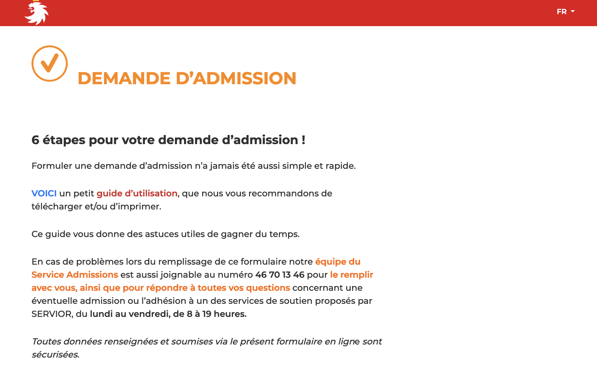Dans la page "Demande d'admission", le menu et les barres de navigation ne sont plus visibles.
Liens d'accès rapide
On note l'absence d'un lien d'accès rapide au contenu au moins. Les liens d'accès rapides sont utiles aux utilisateurs qui naviguent au clavier, mais aussi aux utilisateurs malvoyants qui utilisent une loupe d'écran afin de sauter rapidement les éléments redondants, comme la navigation.
Pour cela, il est préférable que ces liens soient toujours visibles à l'écran. Malgré cela, ces liens peuvent être positionnés hors écran, mais doivent au moins être rendus visibles à la prise de focus.
Il est donc nécessaire d'implémenter au moins un lien d'accès rapide au contenu, qui permet de sauter toute la navigation principale.
Constats sur le site

On trouve un lien d'accès rapide rendu visible à la prise de focus mais qui n'est pas fonctionnel.
Landmarks ARIA
Pour fournir des points de repère aux utilisateurs aveugles, il faudra également implémenter les landmarks ARIA sur les balises HTML 5 de la page.
Constats sur le site
Les landmarks ARIA sont manquants sur :
- l'en-tête principal,
- le contenu principal,
- les zones de navigation,
- le pied de page,
- le conteneur du moteur de recherche.
Ordre de tabulation
La navigation dans les contenus peut être considérablement compliquée pour les personnes aveugles ou les personnes handicapées motrices qui naviguent au clavier si l'ordre de tabulation n'est pas cohérent.
L'ordre de tabulation est déterminé par l'ordre des éléments dans le code HTML. Il ne suit pas forcément l'ordre de lecture de la page ou de l'écran, mais il doit être cohérent en fonction de la nature des contenus et des fonctionnalités.
Constats sur le site
Pour certaines pages ("Accueil", "Demande d'admission","Actualités"), l'ordre de tabulation n'est pas cohérent. Par exemple :
- En page "Accueil", lorsque l'on déploie au clavier le menu principal, on tabule dans d'autres éléments avant d'atteindre ceux du menu ;
- En page "Demande d'admission", le focus n'est pas positionné sur le premier élément du formulaire ;
- En page "Actualités", les filtres sont parcourus après la liste d'actualités.
Avec le navigateur Firefox, certaines pages présentent également des pièges au clavier, c'est-à-dire qu'il n'est pas possible de passer à l'élément suivant, dans les pages "Accueil", "Nos centres", "Actualités".
Consultation
Recommandation
Vérifier que l'utilisateur a le contrôle des procédés de rafraîchissement, des changements brusques de luminosité, des ouvertures de nouvelles fenêtres et des contenus en mouvement ou clignotants. Ne pas faire dépendre l'accomplissement d'une tâche d'une limite de temps sauf si elle est essentielle et s'assurer que les données saisies sont récupérées après une interruption de session authentifiée. Proposer des versions accessibles ou rendre accessibles les documents en téléchargement. S'assurer que la consultation n'est pas dépendante de l'orientation de l'écran. Toujours proposer un geste simple en alternative d'un geste complexe permettant de réaliser une action.
Documents en téléchargement
Assurez-vous que chaque document soit accessible (cf. les Guides de créations de documents bureautiques accessibles), ou qu'il dispose d'une alternative accessible proposant le même contenu (par exemple, une version HTML correctement structurée).
Constats sur le site
Dans les pages "Publications", "Demande d'admission" et "Repas sur roues", on trouve des documents au format PDF en téléchargement qui ne sont pas correctement structurés et qui n'ont pas d'alternative.
Contenus cryptiques
Les contenus cryptiques (art ascii, émoticône, syntaxe cryptique par exemple) peuvent être incompréhensibles pour une personne aveugle ou une personne handicapée intellectuelle. Il est donc nécessaire de donner la signification du texte cryptique par un des moyens suivants :
- Si l’élément est un élément interactif (lien ou bouton) utiliser l’attribut title :
- Sinon, utiliser le contexte adjacent :
:) (sourire)
Constats sur le site
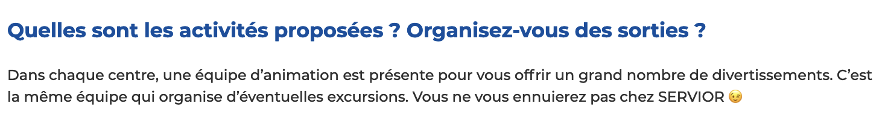En page "FAQ", on trouve un émoticon "clin d'œil" n'ayant pas d'alternative dans la partie "À propos des repas" - "Quelles sont les activités proposées".
Contenus en mouvement ou clignotants
Les contenus en mouvement peuvent être problématiques pour les utilisateurs avec des difficultés de lecture, en effet un contenu qui défile trop rapidement empêche d'accéder de fait à l'information. De plus, pour les personnes avec un déficit de l'attention, le mouvement les empêche de lire le reste de la page.
Il faut alors permettre aux utilisateurs d'arrêter et de redémarrer le contenu en mouvement , ou d'afficher tout le contenu sans le mouvement ou de masquer le contenu en mouvement et de le réafficher.
Constats sur le site
Les carrousels présents en page "Accueil" et "Bascharage" ne possèdent pas de bouton de mise en pause.